| 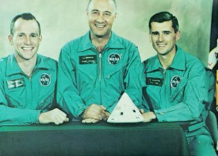 |
Apollo 1 Edward H. White II, senior pilot Virgil I. Grissom, command pilot Roger B. Chaffee, pilot |
| 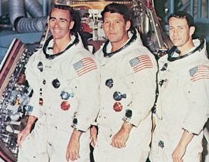 |
Apollo 7 R. Walter Cunningham, lunar module pilot Walter M. Schirra, Jr., commander Donn F. Eisele, command module pilot |
| 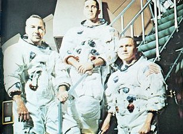 |
Apollo 8 James A. Lovell, command module pilot William A. Anders, lunar module pilot Frank Borman, commander |
| 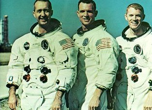 |
Apollo 9 James A. McDivitt, commander David R. Scott, command module pilot Russell L. Schweickart, lunar module pilot |
| 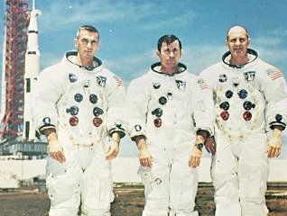 |
Apollo 10 Eugene A. Cernan, lunar module pilot John W. Young, command module pilot Thomas P. Stafford, commander |
| 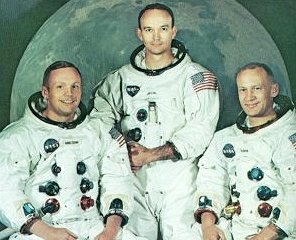 |
Apollo 11 Neil A. Armstrong, commander Michael Collins, command module pilot Edwin E. Aldrin, Jr., lunar module pilot |
| 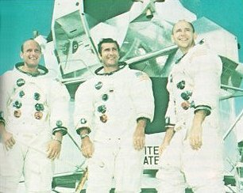 |
Apollo 12 Charles Conrad, Jr., commander Richard F. Gordon, command module pilot Alan L. Bean, lunar module pilot |
| 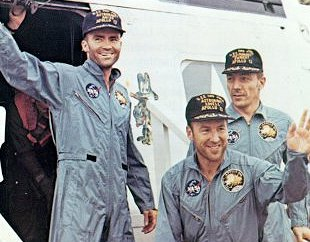 |
Apollo 13 Fred W. Haise, Jr., lunar module pilot James A. Lovell, commander John L. Swigert, Jr., command module pilot |

|
Apollo 14 Stuart A. Roosa, command module pilot Alan B. Shepard, Jr., commander Edgar D. Mitchell, lunar module pilot |
| 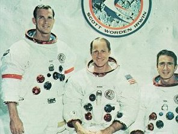 |
Apollo 15 David R. Scott, commander Alfred M. Worden, command module pilot James B. Irwin, lunar module pilot |
| 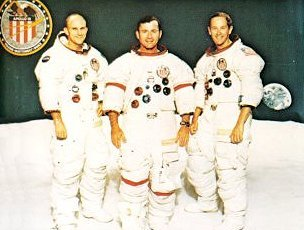 |
Apollo 16 Thomas K. Mattingly II, command module pilot John W. Young, commander Charies M. Duke, Jr., lunar module pilot |
| 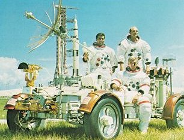 |
Apollo 17 Harrison H. Schmitt, lunar module pilot Ronald E. Evans, command module pilot Eugene A. Cernan, commander |